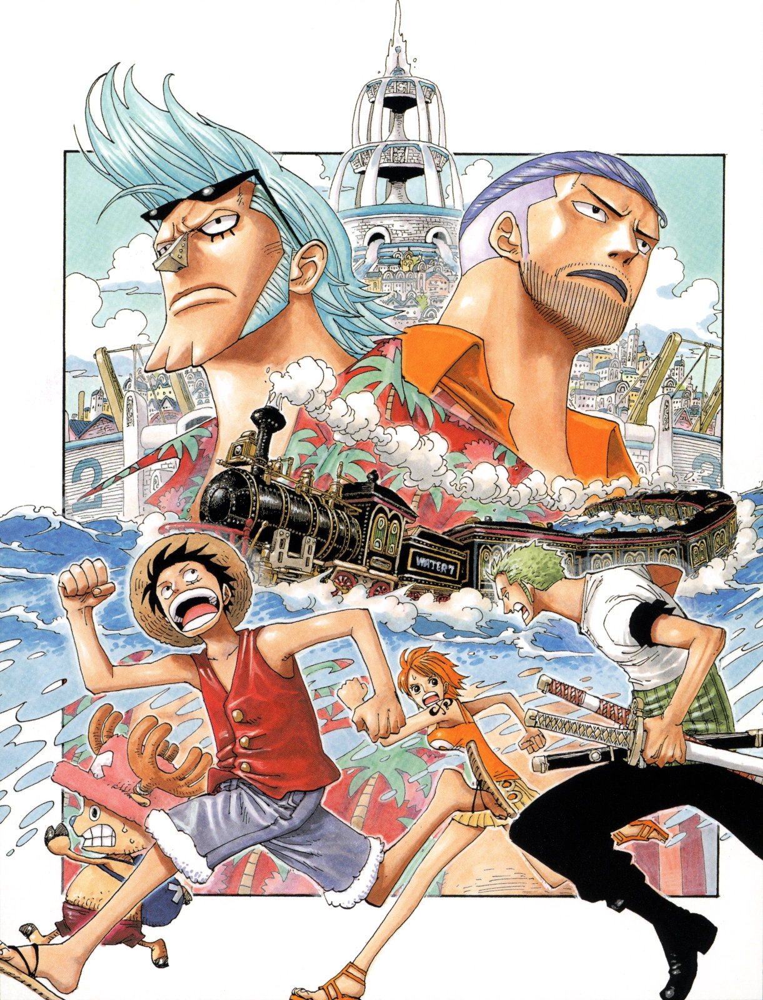

The Straw Hats arrive at the oceanic metropolis of Water 7 to find a shipwright who can repair the Going Merry, as well as potentially join their crew. They soon become targeted by the Franky Family, the city's underground gang, and become involved in a plot within the Galley-La Company. Between the disappearance of Robin and a schism that develops between Luffy and Usopp, the crew begins to fall apart.
The City of Water: Arrival at Water 7
On a nearby station, they met with the stationmaster named Kokoro and her granddaughter Chimney, along with her pet rabbit (who acts like a cat) Gonbe. After revealing that the frog, Yokozuna, was perfectly fine and that it was always testing its strength against the train, Kokoro explained that the train was a Sea Train that connects several of the nearby islands and is called the Puffing Tom. She then told them that the Log Pose would lead them to Water 7, a city of shipwrights where they could fix their ship, and told them to get help from a man named Iceburg.
Luffy's group managed to exchange the gold for Beli 300,000,000 and they went to Dock One of the Galley-La Company. There, they met Kaku, one of the foremen, who revealed that Iceburg was the mayor of Water 7 and the president of Galley-La. Kaku did not know where Iceburg was, so he decided to inspect their ship in the meantime, using immense speed and leaping capabilities to rocket across the city. Just after Kaku left, Iceburg and his secretary, Kalifa, introduced themselves to the three and he agreed to work on their ship.
Kaku returned from his inspection of the ship and revealed a startling fact—the Going Merry was impossible to fix.[6] Since the keel was broken, trying to fix it would be no different from making a new ship entirely. Though Luffy complained about this, Iceburg told him to think about it for a while. The empty suitcases containing the money Usopp carried were found, and they concluded the Franky Family was the cause, so Luffy rushed off aimlessly into the city while Nami headed back to the ship after finding out about the location of their headquarters from the Galley-La workers.
The other Straw Hats went to where Nami left Usopp, but all they could find was bloody footsteps as Luffy fell from the sky. After he explained that he was trying to leap across the city like Kaku, he was told the situation. Outside of the Franky House, Luffy, Zoro, Sanji, and Chopper found Usopp even worse off than before. The four battled the Franky Family, destroying the building, but they found that Franky had already left with most of the money. At this point, Luffy decided to abandon the Going Merry and buy a new ship.
Leaving Friends Behind: The Crew Splits Apart
at the Going Merry, Usopp's wounds are treated, and the news is broken to him that they will change ships. At first, Usopp thinks they are joking but when it's confirmed to be true, he asks if it is because he lost the money, but Luffy insists that the money would not have made any difference and the ship can no longer sail. Usopp gets angry and insists that the Going Merry is just as much of a crewmate as everyone else, yelling that Luffy would trust strangers he met just that day and abandon a friend that was with them from the beginning.
On the ship, Nami tries to convince Luffy to resolve the matter with words, but Luffy points out that Usopp is not the type to arbitrarily put his life on the line for things he did not strongly believe in. Once he issued the challenge, there was no turning back. Meanwhile, Sanji yells at Zoro for letting the Franky Family escape after they attacked him, because if they did not steal the money from Usopp none of this would have happened, but Nami gets them to calm down.
fter being hit by a humongous explosion caused by shooting a Kaen Boshi into a cloud of explosive gas stored in a Breath Dial, Luffy charges towards Usopp while doing his Gomu Gomu no Bazooka attack, but Usopp absorbs the blow into his Impact Dial. Usopp then hits Luffy with the full force of his own attack, thinking he won, but Luffy manages to land on his feet and brings Usopp down with a Gomu Gomu no Bullet. Despite being the winner, Luffy lets Usopp have the Going Merry and has the rest of the crew leave the ship
The Masked Assassins: CP9 Strikes
In the Galley-La headquarters, Iceburg calls Paulie into his room to tell him something, and afterwards Paulie leaves his guard post to go into another room, opening a hidden safe. The four remaining Straw Hats gather outside of headquarters hiding in a tree, observing the building for any events out of the ordinary when there is a huge explosion. At that point, several masked men in costumes (including Robin) rush into the building, who the workers assume are Straw Hat pirates.
While the female assassin distracts the guard, showing incredible speed and the ability to jump while airborne, the man with Robin, wearing a bear mask, manages to enter Iceburg's room from the side using his Doa Doa no Mi. He shoots Iceburg to weaken him, stating that they cannot kill him until they get the signal, and leaves him to Robin while he handles the guards. The bear masked man easily takes care of the foreman Tilestone, demonstrating an ability to make his body as hard as metal.
Iceburg refuses to cooperate with the CP9 so Lucci (who, as it turns out, can speak normally), asks Kaku to check Iceburg's pulse to gauge his reaction to his "theory." Lucci gives his theory as to what happened to the Pluton blueprints. It was assumed that Iceburg was the last apprentice of the shipwright Tom and inherited the blueprints as a result, since reports said that his other apprentice, Cutty Flam, died when he was run over by the Sea Train. However, Cutty Flam is not actually dead—he continues to live in the city to this very day under the name Franky. When he hears this, Iceburg's pulse greatly quickens and Lucci concludes that he was right.
Meanwhile, at Franky's hide-out, Usopp continues to fix the ship while Franky and his assistants, the Square Sisters, cry from his story. When Franky asks what Usopp plans on doing once he fixes his ship, he replies that he's going back to Syrup Village in East Blue after adventuring for a bit longer. Franky tells him that he cannot let him do that, since the ship will not even reach the next island, nonetheless go back to East Blue, and suggests letting him dismantle it. After arguing, Franky throws Usopp into the water under the ship so he can see for himself that the ship is too damaged to go anywhere. Even after resurfacing, Usopp continues fixing the ship and reveals that he already knew the ship was doomed.
He tells them that in Skypiea, the night after the ship was heavily damaged by Priest Shura, Usopp saw a strange figure in the fog fixing it, telling Usopp, "Don't worry, I'll carry everyone a little longer." The next day, though crudely done, the ship was fixed and back in its original form without the upgrades made by the Saruyama Alliance. Not only was it odd that someone would be there to help them, but that they would know what the ship originally looked like, which led Usopp into thinking that the figure was the Going Merry's soul.
Before this discussion can go on much longer, the four CP9 members break in, knocking out the Square Sisters. Franky recognizes them as being from the Galley-La Company and attacks them, asking them what they think they are doing there. Lucci reveals to him that they are from the government, and they know he is really Cutty Flam, also claiming that they killed Iceburg. The cyborg is then knocked through a wall, revealing a dusty workshop—the place where Tom's Workers operated and the CP9 decide to look through it in search of the Pluton blueprints, tearing the room apart, but Franky tells them to get out of there.